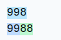
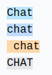
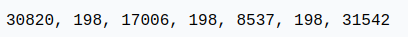
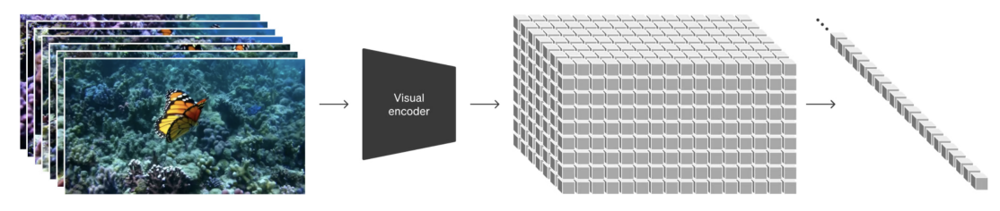

词元化介绍#
语言模型（LLM）的关键组成部分是词元化。这是Transformer网络的第一步，将文本转换为整数序列。本课程大量参考了Andrej Karpathy的视频《Let’s build the GPT Tokenizer》。
在实现我们的GPT时，我们使用了一个非常简单的词元化器，它将每个字符编码为不同的整数。实际上，我们更倾向于编码字符块，即字符的组合。
理解词元化器的工作原理对于理解语言模型的运作至关重要。
课程结束时，我们将能够回答以下问题：
为什么LLM难以拼写单词？
为什么LLM难以执行简单的字符串操作（如反转字符串）？
为什么LLM在英语上表现更好？
为什么LLM在算术上表现不佳？
为什么GPT-2在Python上表现不佳？
为什么我的LLM在接收字符串”
”时会立即停止？ 为什么LLM在提到SolidGoldMagiKarp时会崩溃？
为什么使用YAML比使用JSON更有利于LLM？
注意：词元化器是LLM的一个完全独立部分，它有自己的训练数据集，并且是以不同方式训练的。

GPT-2的词元化器#
我们可以通过Tiktokenizer网站来分析GPT-2的词元化过程，以了解可能存在的问题。GPT-2的词元化器拥有大约50,000个单词的词汇量，这意味着有50,000个不同的词元。
算术#
首先，如果我们来看算术部分，会发现数字可以以相当任意的方式分割成词元。 例如：

998是一个完整的词元，但9988被分成两个词元：99和88。 可以轻松想象，对于LLM来说，计数变得复杂。
相同的单词，不同的词元#
对于相同的单词，根据其书写方式，我们会得到不同的词元。 例如：  
这四个相同的单词由不同的词元表示（词元198对应换行）。因此，模型必须学习这些词元几乎是相同的。
其他语言#
对于相同的句子在不同的语言中，使用的词元数量不同：

这是因为GPT-2的词元化器主要在英语数据上进行训练。 实际上，这会降低模型在其他语言中的能力，因为信息上的上下文不再相同。可以插入比日语更长的英语文本。
Python#
我们可以观察词元化器如何处理Python代码：

每个缩进的空格都被计为一个词元。如果代码包含大量条件或循环，上下文会迅速增加，这使得模型性能不佳。
注意：此缺陷在GPT的后续版本（3和4）中已修复，例如四个制表符的缩进是一个唯一的词元。

注意2：我们的代码编辑器的配置（Python缩进使用2或4个空格）也会影响词元化。
注意3：专门用于代码的LLM也会有专门的词元化器，这提高了性能。
创建我们自己的词元化器#
要创建我们自己的词元化器，首先看看如何将字符串转换为整数。
Unicode#
一个可能的方法是使用Unicode。这允许将每个字符转换为整数。
sentence="Ce cours de deep learning est génial !"
# ord() permet de récupérer le code unicode d'un caractère
unicode=[ord(char) for char in sentence]
print(unicode)
[67, 101, 32, 99, 111, 117, 114, 115, 32, 100, 101, 32, 100, 101, 101, 112, 32, 108, 101, 97, 114, 110, 105, 110, 103, 32, 101, 115, 116, 32, 103, 233, 110, 105, 97, 108]
实际上，我们不能使用这个方法，原因有以下几点：
目前有大约150,000个字符，这作为词汇量的大小太大了。
每年都有定期更新，这将使基于Unicode的词元化器在一年后过时。
UTF-8#
另一种可能性是使用UTF-8编码（16或32位也是可能的，但不太实际），它允许将Unicode编码为4到8位。这样做，我们的基本词汇量将是256。
我们保留UTF-8的想法，但希望增加词汇量，因为256太小，会迫使LLM拥有巨大的上下文大小。
sentence="Bonjour"
list(sentence.encode('utf-8'))
[66, 111, 110, 106, 111, 117, 114]
字节对编码算法#
为了增加我们的词汇量，我们使用字节对编码算法。 该算法的工作原理很简单：以迭代方式找到最频繁的字节对，并将其替换为一个新的词元（这增加了词汇量1）。 例如，考虑以下序列：
aaabdaaabac
在第一次迭代中，我们发现“aa”是最频繁的对，因此将其替换为Z：
ZabdZabac
Z=aa
在第二次迭代中，我们将“ab”替换为Y：
ZYdZYac
Y=ab
Z=aa
最后，在第三次迭代中，我们可以将ZY替换为X：
XdXac
X=ZY
Y=ab
Z=aa
这样，我们增加了词汇量，同时减少了序列的大小（因此减少了处理所需的上下文）。
注意：训练数据的选择对词元化器至关重要。必须根据我们的目标来选择它们。
该算法的优点在于，我们可以根据需要应用多次，直到获得满意的上下文大小。
注意：训练数据的选择对词元化器至关重要。必须根据我们的目标来选择它们。
字节对编码的应用#
为了说明字节对编码的使用，我们以一大段文本为例并计算对。为此，我们使用巴尔扎克《人间喜剧》第一卷的第一章。该文本来自古腾堡。
with open('balzac.txt', 'r', encoding='utf-8') as f:
text = f.read()
print(text[:1000])
tokens = list(map(int, text.encode('utf-8')))
print(list(tokens[:1000]))
Au milieu de la rue Saint-Denis, presque au coin de la rue du
Petit-Lion, existait naguère une de ces maisons précieuses qui donnent
aux historiens la facilité de reconstruire par analogie l'ancien Paris.
Les murs menaçants de cette bicoque semblaient avoir été bariolés
d'hiéroglyphes. Quel autre nom le flâneur pouvait-il donner aux X et aux
V que traçaient sur la façade les pièces de bois transversales ou
diagonales dessinées dans le badigeon par de petites lézardes
parallèles? Évidemment, au passage de toutes les voitures, chacune de
ces solives s'agitait dans sa mortaise. Ce vénérable édifice était
surmonté d'un toit triangulaire dont aucun modèle ne se verra bientôt
plus à Paris. Cette couverture, tordue par les intempéries du climat
parisien, s'avançait de trois pieds sur la rue, autant pour garantir des
eaux pluviales le seuil de la porte, que pour abriter le mur d'un
grenier et sa lucarne sans appui. Ce dernier étage était construit en
planches clouées l'une sur l'autre comme de
[65, 117, 32, 109, 105, 108, 105, 101, 117, 32, 100, 101, 32, 108, 97, 32, 114, 117, 101, 32, 83, 97, 105, 110, 116, 45, 68, 101, 110, 105, 115, 44, 32, 112, 114, 101, 115, 113, 117, 101, 32, 97, 117, 32, 99, 111, 105, 110, 32, 100, 101, 32, 108, 97, 32, 114, 117, 101, 32, 100, 117, 10, 80, 101, 116, 105, 116, 45, 76, 105, 111, 110, 44, 32, 101, 120, 105, 115, 116, 97, 105, 116, 32, 110, 97, 103, 117, 195, 168, 114, 101, 32, 117, 110, 101, 32, 100, 101, 32, 99, 101, 115, 32, 109, 97, 105, 115, 111, 110, 115, 32, 112, 114, 195, 169, 99, 105, 101, 117, 115, 101, 115, 32, 113, 117, 105, 32, 100, 111, 110, 110, 101, 110, 116, 10, 97, 117, 120, 32, 104, 105, 115, 116, 111, 114, 105, 101, 110, 115, 32, 108, 97, 32, 102, 97, 99, 105, 108, 105, 116, 195, 169, 32, 100, 101, 32, 114, 101, 99, 111, 110, 115, 116, 114, 117, 105, 114, 101, 32, 112, 97, 114, 32, 97, 110, 97, 108, 111, 103, 105, 101, 32, 108, 39, 97, 110, 99, 105, 101, 110, 32, 80, 97, 114, 105, 115, 46, 10, 76, 101, 115, 32, 109, 117, 114, 115, 32, 109, 101, 110, 97, 195, 167, 97, 110, 116, 115, 32, 100, 101, 32, 99, 101, 116, 116, 101, 32, 98, 105, 99, 111, 113, 117, 101, 32, 115, 101, 109, 98, 108, 97, 105, 101, 110, 116, 32, 97, 118, 111, 105, 114, 32, 195, 169, 116, 195, 169, 32, 98, 97, 114, 105, 111, 108, 195, 169, 115, 10, 100, 39, 104, 105, 195, 169, 114, 111, 103, 108, 121, 112, 104, 101, 115, 46, 32, 81, 117, 101, 108, 32, 97, 117, 116, 114, 101, 32, 110, 111, 109, 32, 108, 101, 32, 102, 108, 195, 162, 110, 101, 117, 114, 32, 112, 111, 117, 118, 97, 105, 116, 45, 105, 108, 32, 100, 111, 110, 110, 101, 114, 32, 97, 117, 120, 32, 88, 32, 101, 116, 32, 97, 117, 120, 10, 86, 32, 113, 117, 101, 32, 116, 114, 97, 195, 167, 97, 105, 101, 110, 116, 32, 115, 117, 114, 32, 108, 97, 32, 102, 97, 195, 167, 97, 100, 101, 32, 108, 101, 115, 32, 112, 105, 195, 168, 99, 101, 115, 32, 100, 101, 32, 98, 111, 105, 115, 32, 116, 114, 97, 110, 115, 118, 101, 114, 115, 97, 108, 101, 115, 32, 111, 117, 10, 100, 105, 97, 103, 111, 110, 97, 108, 101, 115, 32, 100, 101, 115, 115, 105, 110, 195, 169, 101, 115, 32, 100, 97, 110, 115, 32, 108, 101, 32, 98, 97, 100, 105, 103, 101, 111, 110, 32, 112, 97, 114, 32, 100, 101, 32, 112, 101, 116, 105, 116, 101, 115, 32, 108, 195, 169, 122, 97, 114, 100, 101, 115, 10, 112, 97, 114, 97, 108, 108, 195, 168, 108, 101, 115, 63, 32, 195, 137, 118, 105, 100, 101, 109, 109, 101, 110, 116, 44, 32, 97, 117, 32, 112, 97, 115, 115, 97, 103, 101, 32, 100, 101, 32, 116, 111, 117, 116, 101, 115, 32, 108, 101, 115, 32, 118, 111, 105, 116, 117, 114, 101, 115, 44, 32, 99, 104, 97, 99, 117, 110, 101, 32, 100, 101, 10, 99, 101, 115, 32, 115, 111, 108, 105, 118, 101, 115, 32, 115, 39, 97, 103, 105, 116, 97, 105, 116, 32, 100, 97, 110, 115, 32, 115, 97, 32, 109, 111, 114, 116, 97, 105, 115, 101, 46, 32, 67, 101, 32, 118, 195, 169, 110, 195, 169, 114, 97, 98, 108, 101, 32, 195, 169, 100, 105, 102, 105, 99, 101, 32, 195, 169, 116, 97, 105, 116, 10, 115, 117, 114, 109, 111, 110, 116, 195, 169, 32, 100, 39, 117, 110, 32, 116, 111, 105, 116, 32, 116, 114, 105, 97, 110, 103, 117, 108, 97, 105, 114, 101, 32, 100, 111, 110, 116, 32, 97, 117, 99, 117, 110, 32, 109, 111, 100, 195, 168, 108, 101, 32, 110, 101, 32, 115, 101, 32, 118, 101, 114, 114, 97, 32, 98, 105, 101, 110, 116, 195, 180, 116, 10, 112, 108, 117, 115, 32, 195, 160, 32, 80, 97, 114, 105, 115, 46, 32, 67, 101, 116, 116, 101, 32, 99, 111, 117, 118, 101, 114, 116, 117, 114, 101, 44, 32, 116, 111, 114, 100, 117, 101, 32, 112, 97, 114, 32, 108, 101, 115, 32, 105, 110, 116, 101, 109, 112, 195, 169, 114, 105, 101, 115, 32, 100, 117, 32, 99, 108, 105, 109, 97, 116, 10, 112, 97, 114, 105, 115, 105, 101, 110, 44, 32, 115, 39, 97, 118, 97, 110, 195, 167, 97, 105, 116, 32, 100, 101, 32, 116, 114, 111, 105, 115, 32, 112, 105, 101, 100, 115, 32, 115, 117, 114, 32, 108, 97, 32, 114, 117, 101, 44, 32, 97, 117, 116, 97, 110, 116, 32, 112, 111, 117, 114, 32, 103, 97, 114, 97, 110, 116, 105, 114, 32, 100, 101, 115, 10, 101, 97, 117, 120, 32, 112, 108, 117, 118, 105, 97, 108, 101, 115, 32, 108, 101, 32, 115, 101, 117, 105, 108, 32, 100, 101, 32, 108, 97, 32, 112, 111, 114, 116, 101, 44, 32, 113, 117, 101, 32, 112, 111, 117, 114, 32, 97, 98, 114, 105, 116, 101, 114, 32, 108, 101, 32, 109, 117, 114, 32, 100, 39, 117, 110, 10, 103, 114, 101, 110, 105, 101, 114, 32, 101, 116, 32, 115, 97, 32, 108, 117, 99, 97, 114, 110, 101, 32, 115, 97, 110, 115, 32, 97, 112, 112, 117, 105, 46, 32, 67, 101, 32, 100, 101, 114, 110, 105, 101, 114, 32, 195, 169, 116, 97, 103, 101, 32, 195, 169, 116, 97, 105, 116, 32, 99, 111, 110, 115, 116, 114, 117, 105, 116, 32, 101, 110, 10, 112, 108, 97, 110, 99, 104, 101, 115, 32, 99, 108, 111, 117, 195, 169]
现在计算对：
def get_stats(ids):
counts = {}
for pair in zip(ids, ids[1:]):
counts[pair] = counts.get(pair, 0) + 1
return counts
stats = get_stats(tokens)
print("Les 5 paires les plus fréquentes : ",sorted(((v,k) for k,v in stats.items()), reverse=True)[:5])
top_pair = max(stats, key=stats.get)
print("La paire la plus fréquente est : ", top_pair)
Les 5 paires les plus fréquentes : [(5025, (101, 32)), (2954, (115, 32)), (2429, (32, 100)), (2332, (116, 32)), (2192, (101, 115))]
La paire la plus fréquente est : (101, 32)
现在定义一个函数来合并最频繁的对：
# Fonction pour fusionner les paires les plus fréquentes, on donne en entrée la liste des tokens, la paire à fusionner et le nouvel index
def merge(ids, pair, idx):
newids = []
i = 0
while i < len(ids):
# Si on est pas à la dernière position et que la paire correspond, on la remplace
if i < len(ids) - 1 and ids[i] == pair[0] and ids[i+1] == pair[1]:
newids.append(idx)
i += 2
else:
newids.append(ids[i])
i += 1
return newids
# Test de la fonction merge
print(merge([5, 6, 6, 7, 9, 1], (6, 7), 99))
print("taille du texte avant :", len(tokens))
# On fusionne la paire la plus fréquente et on lui donne un nouvel index (256 car on a déjà les caractères de 0 à 255)
tokens2 = merge(tokens, top_pair, 256)
print(tokens2[:100])
print("taille du texte après :", len(tokens2))
[5, 6, 99, 9, 1]
taille du texte avant : 128987
[65, 117, 32, 109, 105, 108, 105, 101, 117, 32, 100, 256, 108, 97, 32, 114, 117, 256, 83, 97, 105, 110, 116, 45, 68, 101, 110, 105, 115, 44, 32, 112, 114, 101, 115, 113, 117, 256, 97, 117, 32, 99, 111, 105, 110, 32, 100, 256, 108, 97, 32, 114, 117, 256, 100, 117, 10, 80, 101, 116, 105, 116, 45, 76, 105, 111, 110, 44, 32, 101, 120, 105, 115, 116, 97, 105, 116, 32, 110, 97, 103, 117, 195, 168, 114, 256, 117, 110, 256, 100, 256, 99, 101, 115, 32, 109, 97, 105, 115, 111]
taille du texte après : 123962
仅通过一次合并，我们已经大大减小了文本的编码大小。 现在，我们将定义所需的词汇量大小，并根据需要合并多次！
vocab_size = 276 # La taille du vocabulaire que l'on souhaite
num_merges = vocab_size - 256
tokens_merged=tokens
merges = {} # (int, int) -> int
for i in range(num_merges):
stats = get_stats(tokens_merged)
pair = max(stats, key=stats.get)
idx = 256 + i
print(f"merging {pair} into a new token {idx}")
tokens_merged = merge(tokens_merged, pair, idx)
merges[pair] = idx
merging (101, 32) into a new token 256
merging (115, 32) into a new token 257
merging (116, 32) into a new token 258
merging (195, 169) into a new token 259
merging (101, 110) into a new token 260
merging (97, 105) into a new token 261
merging (44, 32) into a new token 262
merging (111, 110) into a new token 263
merging (101, 257) into a new token 264
merging (111, 117) into a new token 265
merging (114, 32) into a new token 266
merging (97, 110) into a new token 267
merging (113, 117) into a new token 268
merging (100, 256) into a new token 269
merging (97, 32) into a new token 270
merging (101, 117) into a new token 271
merging (101, 115) into a new token 272
merging (108, 256) into a new token 273
merging (105, 110) into a new token 274
merging (46, 32) into a new token 275
现在我们可以看到两个词元序列之间的区别：
print("Taille de base:", len(tokens))
print("Taille après merge:", len(tokens_merged))
print(f"compression ratio: {len(tokens) / len(tokens_merged):.2f}X")
Taille de base: 128987
Taille après merge: 98587
compression ratio: 1.31X
我们已经压缩了序列的大小，同时仅增加了20个词汇量。 GPT-2将词汇量增加到50,000，因此可以想象这大大减小了序列的大小。
解码/编码#
现在我们已经构建了词元化器，我们希望能够在整数（词元）和文本之间相互转换。
为此，首先构建解码函数：
vocab = {idx: bytes([idx]) for idx in range(256)}
for (p0, p1), idx in merges.items():
vocab[idx] = vocab[p0] + vocab[p1]
# Fonction pour décoder les ids en texte, prend en entrée une liste d'entiers et retourne une chaine de caractères
def decode(ids):
tokens = b"".join(vocab[idx] for idx in ids)
text = tokens.decode("utf-8", errors="replace") # errors="replace" permet de remplacer les caractères non reconnus par le caractére spécial �
return text
print(decode([87]))
W
以及编码函数：
# Fonction pour encoder le texte en ids, prend en entrée une chaine de caractères et retourne une liste d'entiers
def encode(text):
tokens = list(text.encode("utf-8"))
while len(tokens) >= 2:
stats = get_stats(tokens)
pair = min(stats, key=lambda p: merges.get(p, float("inf")))
if pair not in merges:
break
idx = merges[pair]
tokens = merge(tokens, pair, idx)
return tokens
print(encode("Bonjour"))
# On eut véifier que l'encodage et le décodage fonctionne correctement
print(decode(encode("Bonjour")))
# Et sur le text en entier
text2 = decode(encode(text))
print(text2 == text)
[66, 263, 106, 265, 114]
Bonjour
True
正则表达式模式#
GPT系列使用正则表达式模式来分隔文本以创建词汇表。这允许我们对生成的词元类型有更多的控制（例如，避免“狗”、“狗!”和“狗?”有不同的词元）。在Tiktoken（GPT的词元化器）的源代码中，我们可以找到以下模式：’s|’t|’re|’ve|’m|’ll|’d| ?\p{L}+| ?\p{N}+| ?[^\s\p{L}\p{N}]+|\s+(?!\S)|\s+。
语法相当复杂，但我们将其分解以理解其作用：
‘s|’t|’re|’ve|’m|’ll|’d：对应于英语的缩略形式，如“is”、“it”、“are”、“have”、“am”、“will”和“had”。这些词元在自然语言处理中通常需要被隔离。
?\p{L}+：对应于由字母组成的单词。开头的“?”表示单词可以前面有一个空格，这允许捕获带或不带初始空格的单词。
?\p{N}+：对应于数字序列（数字）。同样，一个可选的空格可以在数字序列之前。
?[^\s\p{L}\p{N}]+：对应于一个或多个字符，这些字符既不是空格，也不是字母，也不是数字。这捕获了符号和标点符号，开头有一个可选的空格。
\s+(?!\S)：对应于一个或多个空格，后面只有空格（因此是字符串末尾或换行符之前的空格序列）。
\s+：对应于一个或多个空格。这是一个通用的匹配，用于单词之间的多个空格。
import regex as re
gpt2pat = re.compile(r"""'s|'t|'re|'ve|'m|'ll|'d| ?\p{L}+| ?\p{N}+| ?[^\s\p{L}\p{N}]+|\s+(?!\S)|\s+""")
print(re.findall(gpt2pat, "Hello've world123 how's are you!!!?"))
['Hello', "'ve", ' world', '123', ' how', "'s", ' are', ' you', '!!!?']
文本已根据正则表达式模式中描述的条件进行分隔。
特殊词元#
训练和微调时还会添加特殊词元：
<|endoftext|>：此词元用于在训练数据中分隔不同文档。
<|im_start|>和<|im_end|>：这些词元标记用户消息的开始和结束，例如聊天机器人。
注意：在微调期间，可以添加特定于要执行的任务的词元（例如**<|im_start|>和<|im_end|>**）。当然，这将需要修改嵌入矩阵并重新训练它。
其他类型的词元化器#
我们实现的词元化器基于OpenAI的tiktoken，用于GPT模型。另一个常见的词元化器是sentencepiece，用于Google和Meta的模型等。
注意：Sentencepiece比tiktoken复杂得多，并且有许多参数需要设置。实际上，它可能是因为代码是开源的（而tiktoken的训练代码不是开源的，我们只能访问编码和解码的代码）。
在其他模态上的词元化？#
当我们想进行多模态处理（这目前很流行）时，我们需要从不同于文本的模态（如声音或图像）中生成词元。 理想情况下，我们将将声音或图像转换为词元，并将其提供给Transformer，就好像它们是文本一样。
对于图像，我们可以使用VQVAE或VQGAN。其思想是使用VAE或GAN在潜在空间中生成离散值。这些离散值然后被用作词元。

图片来自论文。
OpenAI的SORA模型在视频上做了类似的事情：

图片来自论文
对开头问题的回答#
现在我们将利用所学知识来回答课程开头提出的问题：
为什么LLM难以拼写单词？ 词元的分割使得每个单词不被分解成所有字符，而是分解成字符块。这样，模型难以将其分解。
为什么LLM难以执行简单的字符串操作（如反转字符串）？ 这与前一个问题的原因大致相同。要反转一个单词，仅反转表示该单词的词元是不够的。
为什么LLM在英语上表现更好？ 这有几个原因：Transformer的训练数据和词元化器的训练数据。对于Transformer，更多的英语数据使其能够更好地学习语言及其细微差别。对于词元化器，如果它在英语数据上进行训练，生成的词元将主要适用于英语单词，因此需要比其他语言更少的上下文。
为什么LLM在算术上表现不佳？ 数字根据训练数据以相当任意的方式表示。在这些词元上执行操作对LLM来说并不容易。
为什么GPT-2在Python上表现不佳？ 如前所述，GPT-2的词元化器将简单的空格转换为一个词元。在Python中，由于缩进和多个条件/循环，很快会有很多空格，这会显著影响上下文。
为什么我的LLM在接收字符串”
”时会立即停止？ 这是一个在训练数据中添加的特殊词元，用于分隔文本。当LLM遇到它时，必须停止生成。为什么LLM在提到SolidGoldMagiKarp时会崩溃？ 这个问题稍微不太明显，我建议阅读这篇博客文章。简单来说，如果单词出现在词元化器的训练数据中但不在LLM的训练数据中，那么该词元的嵌入将根本没有训练，LLM在遇到该词元时会表现出随机行为。SolidGoldMagiKarp是一个Reddit用户，应该经常出现在词元化器的训练数据中，但不在Transformer的训练数据中。
为什么使用YAML比使用JSON更有利于LLM？ 这与Python的情况类似。GPT-2的词元化器（以及大多数模型）将JSON文档转换为比其YAML等效项更多的词元。因此，从JSON转换为YAML会减少处理文档所需的上下文。